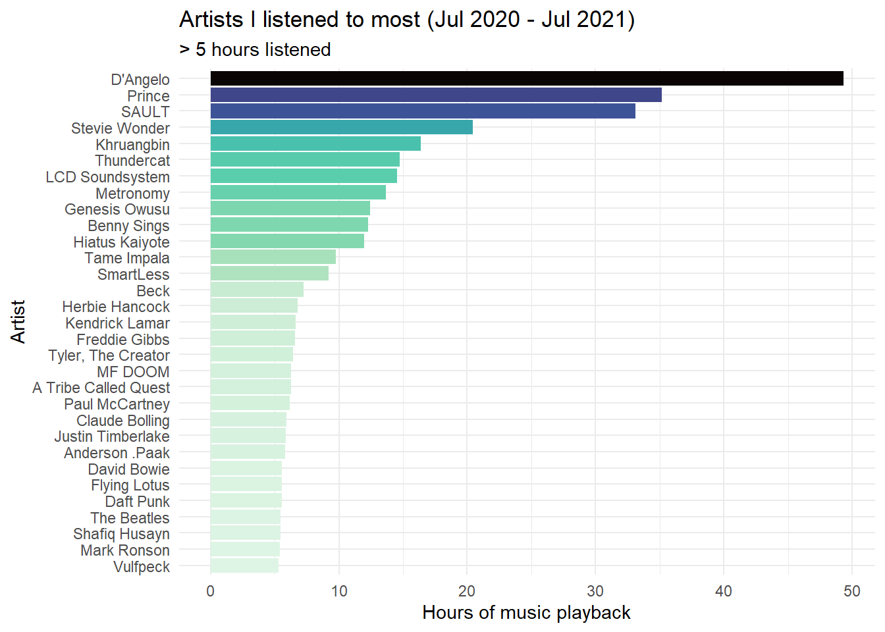
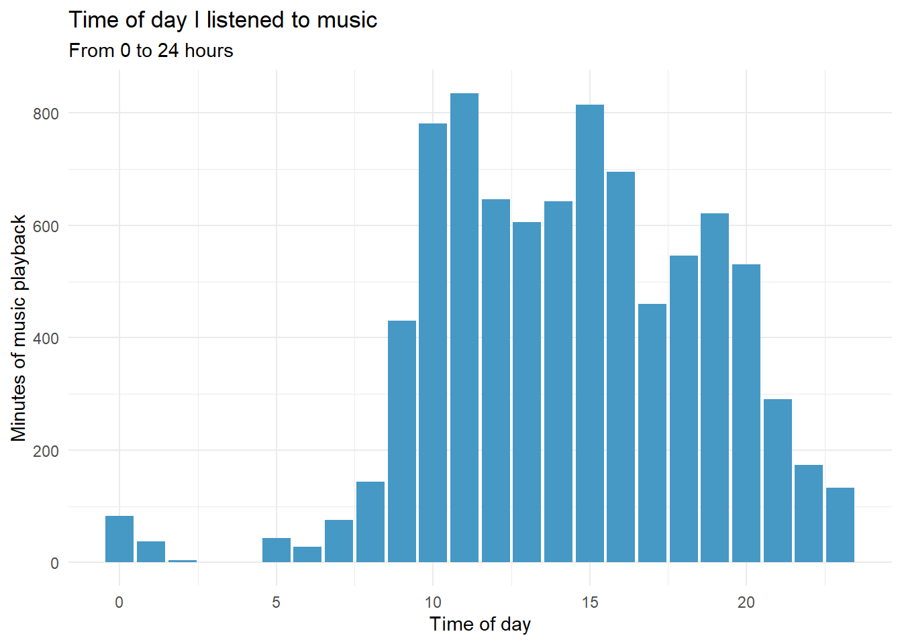

# packages
library(jsonlite)
library(lubridate)
library(gghighlight)
library(spotifyr)
library(tidyverse)
library(kableExtra)
library(plotly)
library(viridis)
library(here)Spotify let’s you download your listening history without much fuss. Thanks to some excellent posts like this one and some really cool packages like spotifyr, it’s also easy to learn how to download your Spotify data and make some nice visualisations in R.
So, I thought I would try it out!
# Importing data
# Import the stream data from Spotify which are in JSON-format.
# Create a month variable by flooring the stream date column.
df <- bind_rows(
as_tibble(fromJSON("private_data/MyData/StreamingHistory0.json")),
as_tibble(fromJSON("private_data/MyData/StreamingHistory1.json")),
as_tibble(fromJSON("private_data/MyData/StreamingHistory2.json"))
) %>%
mutate_at("endTime", ymd_hm) %>%
mutate(endTime = endTime + hours(10)) %>%
mutate(date = floor_date(endTime, "day") %>%
as_date, seconds = msPlayed / 1000, minutes = seconds / 60)Hours of listening per week
# Playback activity per week & hours
streamingHours <- df %>%
group_by(date = floor_date(date, "week")) %>%
summarise(hours = sum(minutes) / 60) %>%
arrange(date) %>%
ggplot(aes(x = date, y = hours)) +
geom_col(aes(fill = hours), alpha = 0.9) +
scale_fill_viridis(option = "D", direction = -1) +
labs(x= "Date", y= "Hours of music playback") +
ggtitle("My weekly listening on Spotify (Jul 2020 - Jul 2021)") +
theme_minimal()
ggplotly(streamingHours)Artists I listen to most
minutesMostListened <- df %>%
group_by(artistName) %>%
summarise(hoursListened = ((sum(minutes)) / 60) %>% round(., 2)) %>%
filter(hoursListened >= 5) %>%
ggplot(aes(x = reorder(artistName, hoursListened), y = hoursListened)) +
geom_col(aes(fill = hoursListened)) +
scale_fill_viridis(option = "G", direction = -1) +
labs(x= "Artist", y= "Hours of music playback") +
ggtitle("Artists I listened to most (Jul 2020 - Jul 2021)",
subtitle = "> 5 hours listened") +
theme_minimal() +
theme(legend.position = "none") +
coord_flip()
minutesMostListened
Note: This section requires that you get a Client ID and secret number from Spotify. See this section from Saúl Buentello’s blog post to learn how.
# To do this yourself you need to get the following:
library(spotifyr)
Sys.setenv(SPOTIFY_CLIENT_ID = Sys.getenv("CLIENTID"))
Sys.setenv(SPOTIFY_CLIENT_SECRET = Sys.getenv("CLIENTSECRET"))
access_token <- get_spotify_access_token()When do I listen to music?
# When am I listening to music?
hoursDay <- df %>%
mutate(
hour = hour(endTime),
weekday = wday(date, label = TRUE)
) %>%
group_by(hour, weekday) %>%
summarise(minutesListened = sum(minutes))
hoursDay %>%
ggplot(aes(x = hour, y = minutesListened)) +
stat_summary(fun = "mean", geom = "bar", fill = "#4698c5") +
labs(x = "Time of day", y = "Minutes of music playback") +
ggtitle("Time of day I listened to music",
"From 0 to 24 hours") +
theme_minimal()